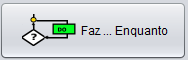
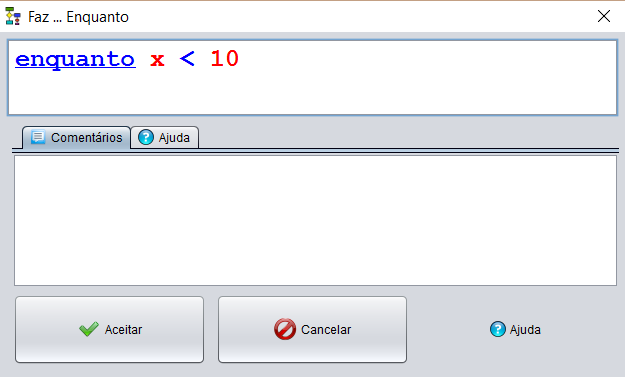
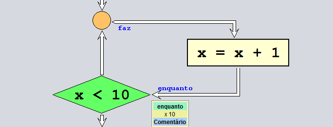
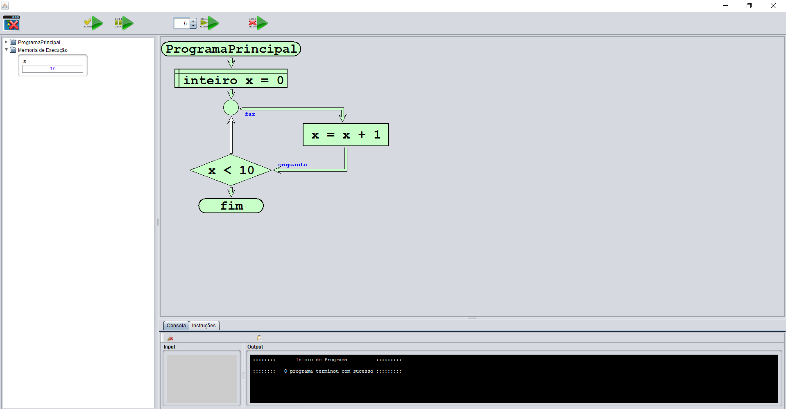

A instução faz ... enquanto (do ... while) repete as instruções até que a condição seja verdadeira

Declaração da Instrução.

Instrução declarada

Fluxograma com uma instrução repete (do...while) implementada.
Em baixo esta representado o modo execução do programa.
Como se pode ver o ciclo repete é executado sempre que o x < 10.
Assim que o x >= 10 o ciclo é interrompido.
